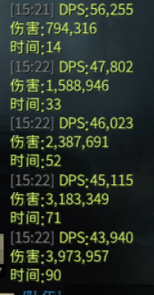
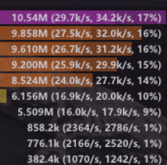
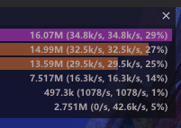

大剑、匕剑直伤时空，55-44K 最终版
除魔，剑3，剑5，职业F3，剑2，切武器|1豆黑=职业F3，大剑4，大剑2，大剑3，大剑4=1=大剑4黑=幻光纹章，剑5，剑3，剑2，灾难法池，衰老法池，除魔，重力陷阱，行动法池，衰老法池>9500=剑4，衰老法池>9500=大剑5，剑2=2=剑切大剑，大剑2=2=大剑切剑|3豆=职业F1，3豆=职业F2|
除魔,x,880|剑3,3,440|剑5,5,880|职业F3,F3,10|剑2,2,440|切武器,`,200,F5,1,4,780,2,720|1豆黑|大剑4,4,780,,,,,,,,,,b|大剑2,2,710|大剑3,3,310|幻光纹章,e,880,,,,,,,,,,b|灾难法池,c,800|衰老法池,z,800|重力陷阱,b,950|行动法池,z,800|剑4,4,350,,,,,,,,,,,,,,,,,,0,,1|大剑5,5,480|剑切大剑,`,130,3,310,F5,1,4,560|大剑切剑,`,130,5,780|3豆|职业F1,F1,10|职业F2,F2,10
[&DQcBHQoZKDUjDyMPjwGPAQQTfwGHEoIBsxLtEgAAAAAAAAAAAAAAAAAAAAADLwBaADIAAA==]
装备
全套狂战 武勇 精确
或者
左侧狂战 右侧刺客混搭 100%暴击 武勇、冲击
克达古物444
利用新版方案，通过判断衰老法池的buff时间，实现buff维持
衰老法池冷却20秒，有敏捷那么15秒，触发后提供8秒古物，而大剑5，剑4又可以维持8秒，两者16秒，这样使用完武器技能后衰老法池又可以使用，从而实现维持古物buff
衰老法池触发时间有一定滞后，所以触发时间改为9.5秒，同时，f3改为常驻，用于补充buff的真空期。
测试多轮，稳定性比较好


菲薄

李部长
评论列表（90）
43k是4月份平衡前的伤害，现在在35k左右。
@朴林枫 低这么多啊
@晚安老妈明天见 4月份那次是整体平衡性调整了。
有食物板手的情况下30K，无语了，所有的宏到了我这里伤害至少少10K，可能是我的电脑不行
@北烈马 我也是，完全搞不懂啊
佬实测下来我剑4打断次数蛮多克达续不上是啥原因
@霸气的小夏尔 剑4，是属于连续点击，相当于你手动一直点，你可以设置下延迟，改短一些。
大佬好，衰老法池没有设置技能cd，所以衰老法池>9500 这个是不是不生效啊
@不是大佬 衰老法池>9000=技能1，表示衰老法池放了后 9秒 才会用技能1 不需要设置技能cd
@melis 额 我看错了。技能cd那个是两个大于号>>
为啥我的也不切武器 也不打啊
我导入并取色完成后为啥右边的技能都不释放呀，我下载的版本是【自由循环v1.77b3.2】，而且我排查的时候发现，取色时显示的技能按键和我的不一致，我该如何排查这个问题呢，佬
@柔弱不能自理的萌新 点击调试模式，开启循环，如果颜色一样，左上角会显示正确的技能名称，如果不一致什么都不会显示，排查画质插件，神油插件等
M大佬，这套循环有时间判断的部分；衰老法池>9500=剑4，衰老法池>9500=大剑5 不会施放。把前面时间“衰老法池>9500=” 去掉就会施放。这是什么问题啊？
@yaiba 衰老法池，衰老法池>9500=剑4 测试没问题，你是不是把前置技能删除了
有没有人测一下，4.17版本更新后还能打多少
测了 全身13灌注能打个41-42K ，还能玩
m佬，最近的这个时空 起手切武器 会连按两次f5，接着会直接按一个大剑5，不知道什么原因
职业5，在主循环中是没有的，不存在连按2次，只会出现在切武器跟随释放，剑2=2=剑切大剑，大剑2=2=大剑切剑，这2个技能判断次数成功后，才会执行f5+切武器，f9，清空次数要勾选
大佬请教一下，循环里的xx=1=xx和xx=2=xx是啥意思
大佬太牛了，爱你
大佬，我想把这个当敏捷用，怎么取消掉起手f5
起手循环里有一个跟随按键，你自己删除就行
大佬大佬问啥我稳定33k
大佬们为什么不管取多少遍色，还是不能切武器啊，每个技能都单独取色了也不行
换一个切武器热键，或者把鼠标模式改为其他
佬 我打只有39是为啥呢
佬 一豆黑是指没有分身的时候取色嘛 还是一豆反色的时候取
就是没豆子，黑 或者 豆反色都行。
大佬，跟随按键不释放是什么原因呢
关闭360
为啥这一版我的幻光纹章会在匕剑状态下使用=。=
我重新取了下大剑4好了=。=
我也是这样，取了好多遍大剑4还是不行
大剑4的黑和匕剑4的黑是在同一个位置，颜色相同
除魔改到灾难法池后面 起手掉了5k伤害 改回原来的 切武器反色=除魔 在灾难法池前面 起手伤害才变正常
用了新版本之后剑4和大剑3总是打断其他技能，加延迟和勾选纯黑跳转也没用
匕剑能切大剑，大剑切不回去，怎么回事？武器2黑取色时有倒计时绿色，影响吗？
大剑4 不要取那个人物图标的黑色，取12点左侧紫色区域，武器2黑，取的是冷却条读条的左侧黑色
求助，匕剑可以切到大剑，但是大剑就切不回去了。武器4黑2黑都取了多次色，切武器反色也取色了，是哪里不对吗。。。其他循环看起来都正常，就缺了这个切武器
解决了，取色第17和19步，不能参考其他宏的取色方式偷懒，老老实实在对应武器组情况下取色
兄弟你解决了吗，我怎么弄都没法切武器，，，
还是远程舒服，1+1+1 很爽，可以替代灵刃了
大佬，大剑切剑 和剑切大剑，这俩怎么取色啊，是取切武器的图标吗？还是有别的位置
切武器图标
两个问题，第一个起手循环从剑可以切到大剑，之后切不回匕剑了，武器4黑2黑都取了多次色也不行，第二个灾难法池和重力陷阱也是取了多次色都不能正常释放，请问如何解决？
补充一点，在灾难法池换成行动法池后，切武器正常了，行动法池和重力陷阱也可以正常释放了，但衰老法池又不会释放了，有点懵
行动跟衰老二选一，公用一个按键，用于实战中切换，你懂我意思吧，不是说你两个技能都要放上去。你衰老取色的位置如果是通用4，你把通用3换成衰老，那怎么会放呢。
我知道这个意思，我是行动和灾难二选一共用一个键，就不行了
还是说只能在通用4这个键上二选一啊？
取色就行，你实战中切哪个用哪个，不会影响施法，如果你卡住不动，鼠标点击聊天栏，看触发什么按键的字母，如果有某个按键一直在按，就说明你取色错了，冷却中依然触发按键，导致卡住。
请问你问题解决了吗？我也是剑可以切到大剑，但是大剑就切不回去了。武器4黑2黑都取了多次色
把通用3和通用4的技能换一下就好了
切武器反色怎么设置？
取色切武器图标，勾选反色
400w标准魔像，91灌注全局0.85只能打33k左右
亮了就按都不止33，你检查下是不是技能没放，或者普攻没开
0灌，无食物，全BUFF，400万，结算33.1K，少个古物用的是潜行者
同样装备，同样BD，用开发板0923打39K，很奇怪了
我怎么只打了23k左右，f1f2f3在3豆也没有用
除魔，剑3，剑5，剑2，剑2=1=切武器|大剑4，大剑4=1=武器4黑=幻光纹章，大剑2，大剑3，剑5，剑3，剑2，切武器反色=除魔，灾难法池，行动法池，衰老法池，重力陷阱，剑2=1=剑2黑=剑切大剑，大剑2=1=大剑2黑=大剑切剑，buff=剑4，大剑4黑=buff=大剑5|3豆=职业F1，3豆=职业F2，1豆反色=职业F3|
除魔,7,880|剑3,3,440|剑5,5,880|剑2,2,440|切武器,`,150,3,310,F5,1,4,780|大剑4,4,780|武器4黑|幻光纹章,6,968,4,780|大剑2,2,710|大剑3,3,310|切武器反色|灾难法池,8,800|行动法池,9,800|衰老法池,z,800|重力陷阱,0,1100|剑2黑|剑切大剑,`,150,3,310,F5,1,4,560|大剑2黑|大剑切剑,`,150,5,780|buff|剑4,4,200,4,300,,,,,,,,,,,,,,,,0,,1|大剑4黑,4,|大剑5,5,460|3豆|职业F1,F1,10|职业F2,F2,10|1豆反色|职业F3,F3,10
配装为星岬岛直伤时空，添加了克达古物buff监控，buff取反色，有机率打断技能，打断技能过多可自行调整延迟。
起手打完匕剑切大剑4，f5时可等2豆手动f1，f2（整个过程不需要关宏）
第一跳目前最高能有60k，平时在56-58徘徊。结算最高44.3附近，平时在43左右（若是打断技能第一跳可能只在50-54，结算大概只能42）
自行判断是否使用
配装也可换成项链刺客，其余全部狂战士，灌注全威能，不需要打精准灌注。食物扳手不变
克达的buff怎么取？位置也不是固定的啊
你先按f9 找到并双击buff，取色那一栏出来之后 切回游戏，对着木桩使用控制技能，游戏buff栏会有克达古物的效果图标，切回取色，点击取色，鼠标移动到克达buff取色就行了，记得勾选反色
我知道啊 克达之爪的buff图标位置在buff栏里面位置是不一定在哪，有可能第二个，第三个，第一个
f10左下角有个教程1
最高第一跳56 结算42 平均第一跳52左右 结算40
切武器反色怎么弄的，CD太短切不到，大佬们什么方法
弄明白了
1豆反色 是不是就是黑色的时候取啊
取1豆选反色
是不是就是豆不亮的时候取？
取亮的时候点反色，反色的意思就是除了亮的时候都是反色。你取了不亮的时候是没办法判断亮的时候什么颜色的。
大佬 这里为什么两个z技能
这2个看你用哪个，可以替换
总是不切武器是咋回事呢，剑切大剑，大剑切剑到底咋取色。。
切武器，就是正常取技能栏左边那个箭头图标，不切武器的原因是，武器黑没取对，把技能按掉，取对应的技能cd时，12点偏左一点的黑色部分
懂了 谢谢
大佬 有办法让切武器绑定TAB么
看最新更新
这写的真屌~！！！！！大佬辛苦 感谢M佬
能不能整个症状先驱的最好打碎层也能用
是不是打本可以用这个了
比猎龙好
好，感谢
还得是大佬
这个比灵刃爆发高啊 ，明天去试下碎挑
衰老法池＞7000是什么意思，怎么取色
手动重新输入下符号> 取色的时候不会有这个出现才对
恐怖如斯，远程还是爽啊 感谢M佬